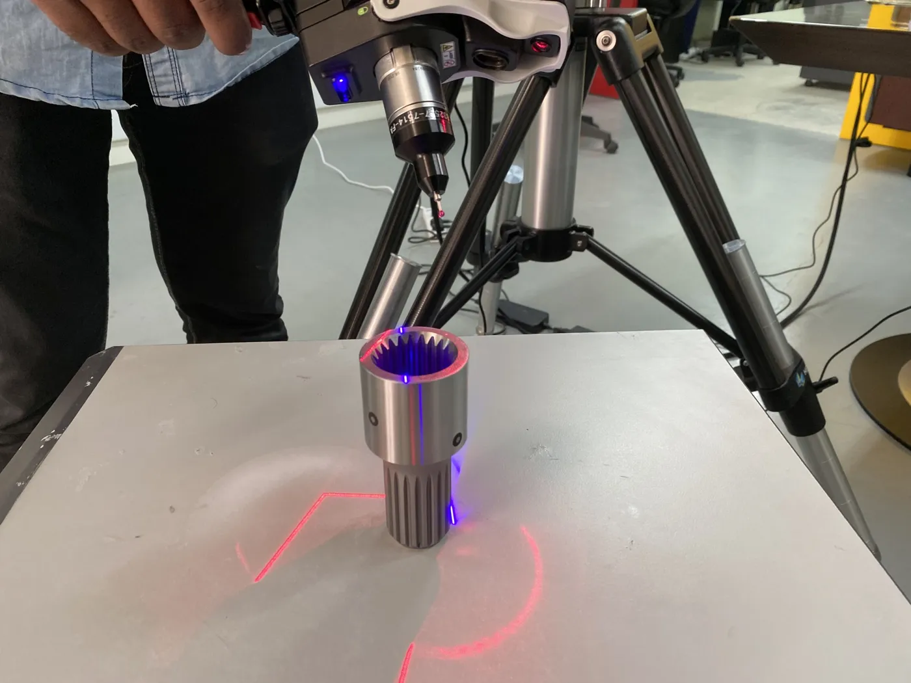

What do we inspect?
- Machined parts: hole positions, bores, faces, flatness and position to GD&T
- Castings and forgings: wall thickness, stock allowance and form against CAD
- Moulded and sheet metal parts: warpage and trim lines
- First-article inspection of a new tool, fixture or supplier part
- Shafts, housings, gears and other parts with datum-based features
- Worn or repaired parts compared with the original drawing or a master part

How a CMM arm inspection works
- Brief. You send the drawing or CAD, the features and tolerances to check, and a photo or the part itself. If there is no drawing, we compare against a master part (golden sample).
- Method. We confirm what to measure and how: arm probe for datum features and tight dimensions, a 3D scan for full-surface form, or both. We tell you the expected accuracy for your part before we start.
- Set-up. The part is fixed so it does not move, and datums are set from your drawing so we measure the way your drawing intends.
- Measurement. We measure the listed features with the CMM arm. Where useful, we scan the surface too, and align the scan to CAD.
- Evaluation. Dimensions are compared with nominal and tolerance. GD&T characteristics (such as flatness, position and profile) are checked where your drawing calls for them.
- Report. You receive a PDF with the deviation colour map, dimensions and GD&T callouts. Inspection reports are normally delivered in 2 to 3 days. We answer questions on the report.
CMM arm or 3D scan: which should you choose?
Choose CMM arm measurement for datum-based features, bores, hole positions, tight tolerances and a drawing that asks for specific dimensions. Choose a 3D scan for castings, moulded parts, sheet metal and freeform shapes where you need to see the whole surface, or when there is no CAD. Use both when a part has a few critical dimensions and a complex form: the scan shows overall form, and the arm checks the features that matter most. We confirm the method before we quote. For the full comparison, read 3D Scanning vs CMM Inspection: Which Method Fits Your Part? and, for scanner specifications, handheld 3D scanner accuracy.
If you need a CAD model of a part first, see reverse engineering services in India. If a worn spare has no drawing, see spare part with no drawing: how we rebuild it.

What does the inspection report contain?
| Item | What you get |
|---|---|
| Deviation colour map | Green within tolerance, other colours show where the part is above or below nominal |
| Dimensions | Measured value, nominal and deviation for each listed feature |
| GD&T callouts | Flatness, position, profile and other characteristics, where required |
| Format | PDF; the scan mesh (STL) is handed over on request |
What do we need from you?
- The drawing or CAD model, and the features and tolerances to check
- The part, or access to it at your plant
- The standard or customer requirement the report must follow, if any
- How many parts, and whether the check repeats
What decides the cost?
We quote per job and do not publish a price list. The main drivers are:
- the size and number of parts,
- the number of features and GD&T checks,
- whether a 3D scan is added,
- how much reporting you need,
- on-site work, travel and accommodation.
Send the drawing and a photo and we reply with a written quote.
Where do we work?
We inspect at our Coimbatore facility, or travel to your plant in Coimbatore and across India, with travel and accommodation extra for on-site jobs. This suits large castings, fixtures and installed parts that cannot be moved. Clients in the UAE are served as a service area. We also scan and reverse engineer: see 3D scanning services in India and 3D scanning services in Coimbatore.
Why VShark Solutions
- Based in Coimbatore since December 2019
- One team for CMM arm inspection, 3D scanning, reverse engineering and CAD
- We are a distributor of JINUOSH Vertex 3D scanners in India, so we know scanning equipment well (JINUOSH Vertex 3D scanners)
- Choosing a provider? Read how to choose a 3D scanning service in Coimbatore and JINUOSH Vertex compared with Creaform, Shining 3D and GOM
Get a quote
Have a part to inspect? Send the drawing and a photo through the contact form or email info@vsharksolutions.com.
Last reviewed: